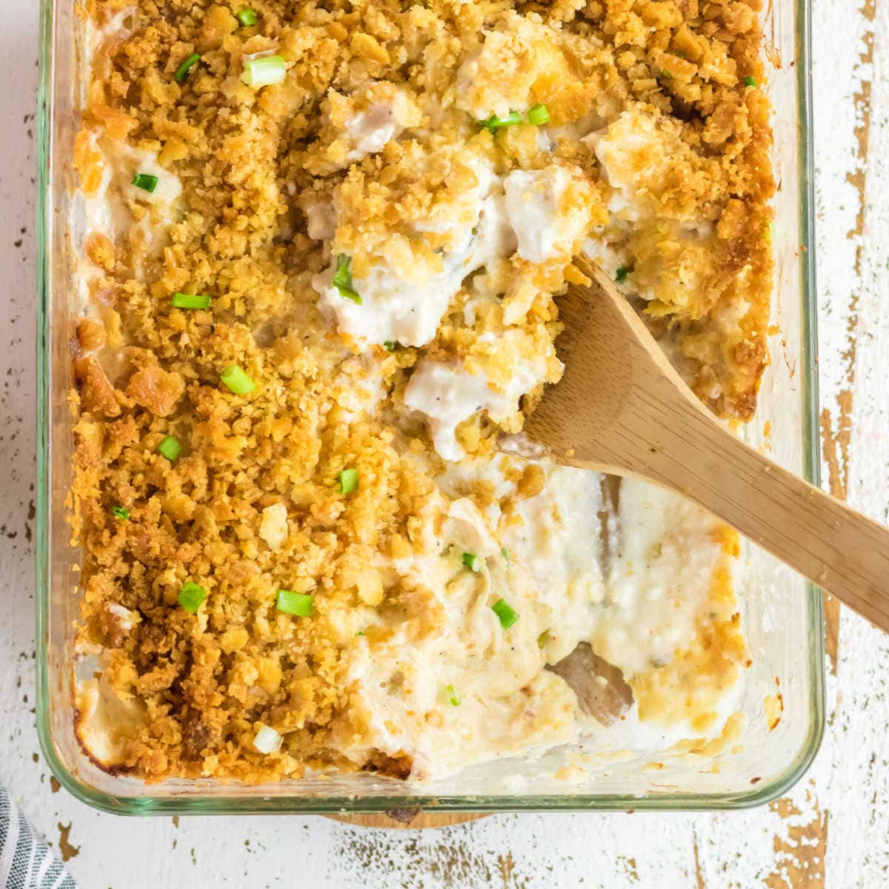

Chicken Casserole

Description
A creamy, comforting dish that has the perfect creamy-crunch ratio. It's great way to use up a leftover rotisserie chicken. The oven does all the work baking this casserole, so you can spend more time with your family. It's great way to use up leftover chicken!
Ingredients
- Chicken
- Cream cheese
- Cottage cheese
- Pepper Jack cheese
- Sour Cream
- Green onions
- Cream of chicken soup
- Garlic powder
- Onion powder
- Ritz crackers
- Butter
Steps
- Combine cream cheese, cottage cheese, sour cream, garlic powder, onion powder and cream of chicken soup in mixing bowl.
- Stir in pepper jack cheese and green onions and cooked chicken until combined.
- Mix together melted butter and ritz crackers.
- Top chicken mixture with crackers and bake until golden brown.